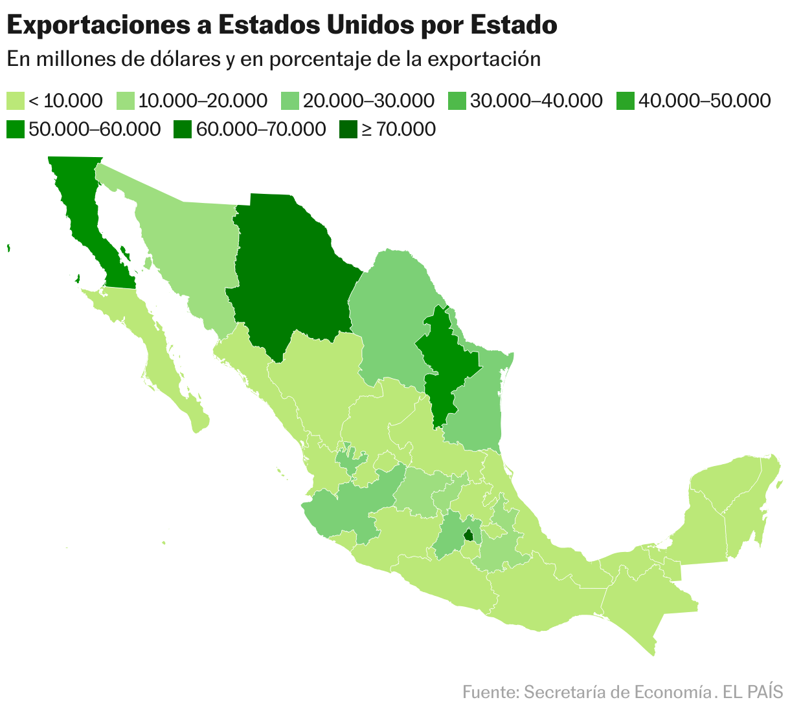
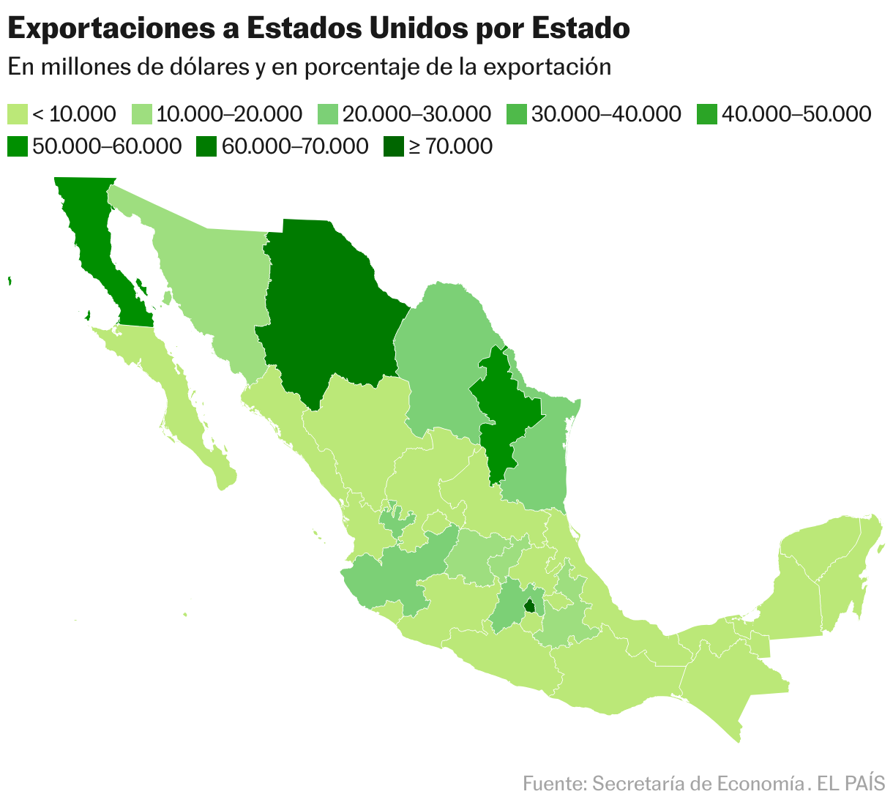

ECONOMY IN MEXICO
La economía de México en 2025 enfrenta un panorama complejo debido a diversos factores internos y externos que han influido en las proyecciones de crecimiento y estabilidad económica.
Proyecciones de Crecimiento Económico:
Banco de México: En febrero de 2025, recortó su estimación de crecimiento para 2025 a 0.6%, desde una previsión anterior de 1.2%.
Este ajuste se atribuye a la incertidumbre generada por amenazas de nuevos aranceles por parte de Estados Unidos, así como a una
caída en el consumo y la inversión privada.
Factores Internos y Externos Influyentes
1. Amenazas Arancelarias de Estados Unidos:
Las amenazas del presidente estadounidense Donald Trump de imponer aranceles del 25% a las importaciones mexicanas han generado un ambiente de incertidumbre, afectando negativamente la inversión extranjera, que ha caído un 39%, el nivel más bajo en tres décadas. Se estima que alrededor de 60,000 millones de dólares en inversiones están paralizados debido a esta situación.
 

2. Cambios en el Gabinete Económico:
Édgar Amador ha sido nombrado secretario de Hacienda, sustituyendo a Arturo Herrera. Amador enfrenta retos como el gasto excesivo del gobierno anterior y las tensiones comerciales con Estados Unidos bajo la presidencia de Donald Trump. Su habilidad para mantener la estabilidad económica y resistir presiones políticas será crucial para el éxito de su gestión.
Perspectivas para 2025
A pesar de los desafíos, existen oportunidades que podrían impulsar la economía mexicana:
1. Nearshoring: La relocalización de cadenas de suministro ofrece a México la
posibilidad de atraer inversiones extranjeras, especialmente en el sector manufacturero.
2. Inversiones en Infraestructura: El gobierno ha anunciado proyectos de infraestructura
que podrían estimular la economía y generar empleo.
En resumen, la economía de México en 2025 enfrenta desafíos significativos debido a la incertidumbre comercial y factores internos.
Sin embargo, con políticas adecuadas y aprovechando oportunidades como el nearshoring, el país podría mitigar algunos de estos impactos
y retomar una senda de crecimiento sostenible.